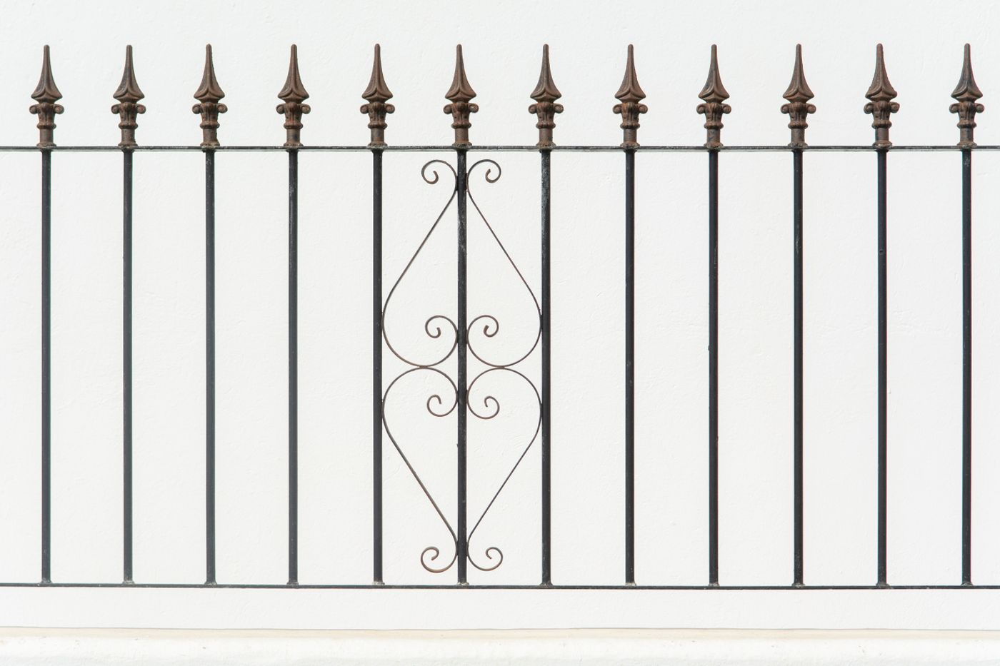
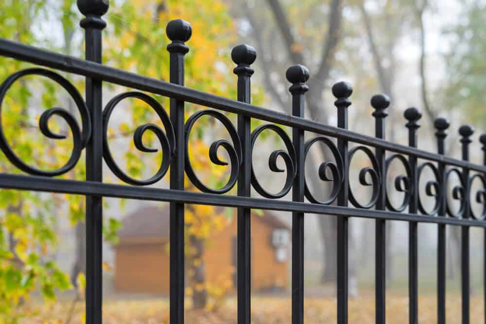

Big Easy Fence designs and installs custom wrought iron fences for residential and commercial properties in Walker. Expect a fence built around your preferred style and details, with maintenance and repair service available after installation.
These are the figures from our Walker page. Your consultation gives you the real numbers for your property.
Iron costs more up front than other materials, but it can be the most cost-effective option in the long run.
Patterns run from a simple picket look to a more complex hairpin style with ornamental extras.
No painting or staining is needed. The powder coat is applied to resist chipping and peeling, and maintenance service is available.
Iron stands up to harsh weather and sudden impact, and it is a strong material for restraining animals.
A higher initial price is easier to accept when the fence lasts and asks for little upkeep.
A handcrafted fence sets your property apart from the rest of the street.
Iron can be used to restore a fence from the Victorian era, so older properties keep their character.
Regular attention is what turns a good fence into a long-lived one.
Regular cleaning prevents many short-term problems, and removing caked-on debris heads off costlier damage. Inspections check for worn paint and signs of cracking. If multiple issues appear, you get advice on whether replacement is the better path, and the goal is always to maintain the fence first.

Rust comes off with sandpaper or a standard wire brush. A protective anti-rust spray then goes on the area to keep rust from building up again.
From design to upkeep, one team handles the work.
Pick your own design or take inspiration from a gallery of past iron fences, then get help choosing the style and color that suit your property and landscape.
The installation team works to industry standards and guides you through the process step by step.
Cleaning, inspections, and rust treatment keep the fence in top shape.
If a section is damaged or worn, repair service brings it back.
Explore the rest of our Walker fencing services.
What Walker property owners ask before choosing iron.
Get a free, no-obligation estimate for your property.